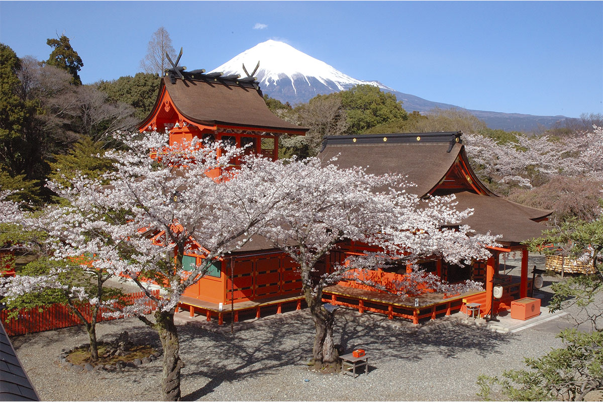
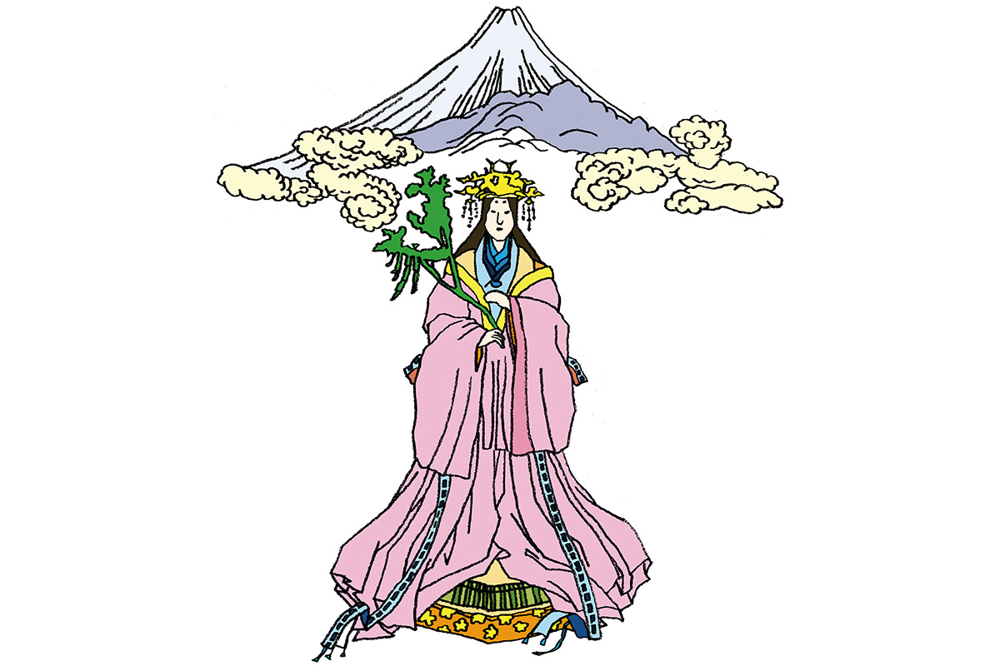

Префектура Сидзуока · Фудзиномия · мифы
Конохана-но Сакуя-химэ: богиня цветущей сакуры, которую почитают на Фудзи

В японских мифах богов множество, и у каждого своя роль и своя сила. Конохана-но Сакуя-химэ воплощает красоту цветущей сакуры, а прославилась тем, что родила ребёнка посреди огня.
Миф
Богиня, родившая в огне
Когда Японии как страны ещё не было, первые боги Идзанаги и Идзанами породили множество других божеств. Каждому достались свои обязанности и своя сила, и вместе они обустраивали будущую страну. Среди них была и Конохана-но Сакуя-химэ.
Её главная история о силе духа. Богиня рожала прямо в огне и, несмотря ни на что, благополучно разрешилась от бремени. Поэтому её почитают как покровительницу лёгких родов и одновременно как богиню огня. Именно её поместили на Фудзи, чтобы она хранила людей от огненной стихии вулкана.

В богине видят олицетворение красоты сакуры. В двух древнейших японских летописях, «Кодзики» и «Нихон сёки», её имя записано немного разными иероглифами, но речь об одной и той же богине.
Стихия: цветы, прежде всего сакура, и женская красота.
О чём молят: о благополучных родах.
Как это было: рассказ «Кодзики»
Ниниги, внук богини солнца Аматэрасу, спустился с небес, чтобы править землёй. На мысе Касаса он встретил прекрасную девушку и спросил, кто она. Девушка ответила, что она Конохана-но Сакуя-химэ, дочь бога гор Оямацуми. Ниниги захотел взять её в жёны, и отец с радостью согласился.
Вместе с невестой Оямацуми отправил к Ниниги её старшую сестру Иванага-химэ и множество даров. Старшая сестра была некрасива, и Ниниги, испугавшись её вида, отослал её обратно, а младшую оставил у себя. Оямацуми глубоко оскорбился. По его словам, Иванага-химэ должна была дать потомкам небесных богов жизнь вечную и прочную, как скала, а Конохана-но Сакуя-химэ процветание, пышное, как цветы на деревьях. Раз Ниниги оставил только младшую, их жизнь будет недолгой, как цветение. Поэтому, говорится в «Кодзики», жизнь императоров не длится вечно, а по распространённому толкованию и жизнь всех людей стала короткой.
Вскоре Конохана-но Сакуя-химэ сказала мужу, что ждёт ребёнка. Ниниги усомнился: после одной-единственной ночи ребёнок, наверное, не от него, а от какого-то земного бога. Тогда богиня ответила, что если ребёнок от земного бога, роды не будут благополучными, а если от небесного, всё пройдёт хорошо.
Она построила большой дом без дверей, обмазала его изнутри глиной и, когда пришло время рожать, подожгла его. Посреди огня она родила трёх сыновей: Ходэри, Хосусэри и Хоори. Все трое появились на свет невредимыми, и богиня доказала, что это дети Ниниги.
Где увидеть
Святилище Фудзисан Хонгу Сэнгэн-тайся
Самое известное святилище Конохана-но Сакуя-химэ стоит у подножия Фудзи, в городе Фудзиномия. По преданию, во времена седьмого императора, легендарного Корэя, Фудзи извергалась и страна пришла в запустение. Позже одиннадцатый император, Суйнин, тоже легендарный, повелел почитать у подножия дух самой горы, великое божество Асама-но оками, чтобы усмирить вулкан. Так, как считается, и появилось святилище.
Богиня воплощает красоту сакуры, и святилище, где ей поклоняются, стало одним из известных мест любования цветущей сакурой. Весной красные здания тонут в розовых облаках цветов, а над ними поднимается белая вершина Фудзи.
Святилище Фудзисан Хонгу Сэнгэн-тайся
- Адрес
- префектура Сидзуока, Фудзиномия, Мия-мати, 1-1
- Телефон
- +81 544-27-2002
- Сайт
- fuji-hongu.or.jp